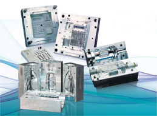

Aluminum Moulding Plate
Mould Aluminum plate Introduction
As the undisputed world leader in aluminum alloy products, HWALU aluminum is uniquely placed in terms of expertise and resources to develop advanced Specialised alloys for aerospace, marine, transport, construction, industrial And engineering applications.Among the many aluminum plate products and cast forging stock manufactured for export worldwide from the HWALU aluminum mill is a comprehensive portfolio of ultra-high performance alloys optimised for plastic mould tooling plate: the HWALU range. HWALU products are specifically engineered to maximise the operational advantages of using aluminum alloys for todays's moulding technologies, including injection moulding, RIM, structural foam moulding, vacuum forming, blow moulding and rubber moulding.
For our clients throughout the world, the business benefits of switching to HWALU are borne out by decades of experience: superior machinability, ease of handling and optimum product quality. Using the same exacting manufacturing standards as employed in supplying aerospace materials, HWALU provides the reassurance of exceptional consistency in terms of quality, reliability and performance. Together with HWALUficant cost savings throughout the production lifecycle from initial machining to eventual disposal, these operational advantages combine to deliver a HWALUficant competitive edge over both steel and generic aluminum alloy alternatives.
Using
HWALU moulds rather than steel substantially reduces production costs in several
ways:
Faster and less costly fabrication
Being
so much easier to machine, HWALU moulds can typically be made in a third of the time
of a steel equivalent, with corresponding savings in fabrication costs. (Ancillary
components such as fittings, pillars and bushes are cost neutral, as conventional
steel components can be used).(Aluminum plate)Lower operational costs
HWALU
moulds weigh anything up to 60% less than steel equivalents, so They are easier
to handle and stock, and exert less strain on your process machinery. As well as
extending press life in this way, specifying HWALU also reduces your expenditure
on tooling, machinery set-up, mould maintenance and ongoing
consumables.
Massive productivity gains
The
thermal conductivity of aluminum plate being many times
higher than steel means that HWALU moulds can cut moulding cycle times - and
therefore increase output - by between 30 and 50%.
Out standing thermal properties
The
thermal conductivity, or even better thermal diffusivity, of aluminum alloys
characterises the main function of molds: too cool down or heat up.
These
parameters have a direct influence on the duration of the cycle and dimensional
and visual quality of the part.
Superior machinability and finishing
With
metal removal rates at least four times greater than steel, HWALU has excellent
machinability and is easy to spark and wire erode. High performance surface
finishes are equally simple to achieve with a wide range of processes including
chemical nickel, hard chrome and hard anodising. EDM polishing and photo-etching
deliver more uniform results compared to steel, and the consistently reliable
microstructural integrity of HWALU alloys allows first class mirror finishes to
be obtained for optically critical applications.(Aluminum plate)
Higher product quality
Superior
thermal conductivity allows an HWALU mould to cool more evenly, minimizing risk
of distortion in the moulded part. Together with lower capital and production
costs, total product consistency and a substantially faster time to market, this
marked quality gain clinches the business case for choosing HWALU.
As
a result of these benefits, one aluminum plate producer estimates
that using aluminum for mold applications can save 30% in cost over steel in
mold manufacturing, increasing to 40% if the reduced part production cycle times
and hence improved productivity are included.
Since
there is a range of different conditions under which tool and mold materials
must operate, different aluminum alloy and temper combinations have evolved to
meet the various needs. Both cast and wrought products are available in a wide
range of thickness, widths, and lengths. Each product type has specific
characteristics that have been tailored to application needs.
|  | |
- Cast plate materials have the following advantages：(Aluminum plate)
- Equiaxed grain structure
- Low residual stress
- Extreme flatness tolerance capability
- Good internal soundness
- Excellent surface finish
specification
Specifically designed for precision
mould applications, the HWALU range has been developed to combine high strength and
mechanical stability with outstanding machinability. Over the three decades since
the brand's introduction, new HWALU alloys have been developed to satisfy the
enhanced performance requirements of specific moulding technologies, such as
improved weldability and resistance to stress corrosion or sustained high
temperatures.(aluminum plate)
For the specifier, this gives the
reassurance of knowing that the performance characteristics of an HWALU mould plate
will exactly match process requirements every time, with all that implies in terms
of reliable long-term operation. HWALU alloys are supplied fully heat treated, with
no further treatment required.

|

|
Wide aluminum plate tolerances Guaranteed
Changes in our production process allow HWALU to now guarantee flatness and thickness tolerances on all HWALU tooling and moulding plate. The improved guarantee sets a new industry standard for tooling plate tolerances.Improved stability and consistency
As you kow, stability and consistency are integral to the quality of HWALU plate. HWALU's proprietary chemistry, casting, and production techniques provides excellent piece-to-piece stability and consistency. High stability and consistency reduce warping and movement during sawing and machining. Also, the plate's through-thickness consistency creates fewer metal inconsistencies for easier and faster machining, allowing less rework and fewer scrap pieces. And our superior lot-to-lot consistency means you get the same result time and time again, so youc an develop standard procedures for machining and finishing operations.Expanded Satin Finish Range
HWALU's genuine satin finish is now available on all tooling plate, the satin finish is twice as smooth as plate with coarse, mechanical finishes. This superior smoothness lets you reduce or eliminate costly surface clean-up operations.Better Identification System
HWALU has also recently updated its marking system. The new method paces product identification on the top of each plate. This new system lets you more easily and accurately identify the select the proper alloy, temper, size and specification. It also helps avoid errors by improving the traceability of sawed blanks.A Quality Commitment
HWALU commit itself to quality processes, products, and performance. This commitment to quality-combined with a strong dedication to our customers-has made HWALU the leader in the aluminum industry. HWALU continuously strives to improve products and processes to meet customer needs and expectations.Guaranteed
The improvements in our wrought tooling plate are one more example of the HWALU Commitment to excellence. The flatness and thickness tolerance guarantee on all HWALU tooling plate, its improved stability and consistency, the expanded satin finish gauge range, the the updated marking system make HWALU's tooling plate the highest quality plate available.General Specification
Chemical Composition
Physical property
Applications
- *Foam Moulding
- *Vacuum Forming
- *Blow Moulding
- *RIM and Structural Foam Moulding
- *Rubber Moulding
- *Injection Moulding
Some of the applications in
which cast plate have been used include food machinery molding plate and other
low pressure molding, electrical heating plate, milling machine bedplate,
automatic inspection machine board holder, and screen printer base
plate.
Wrought aluminum plate products are also widely applied. The nature of the improvements made to the aluminum plate products for use in tool and mold applications involves the following areas:
>> Improved uniformity in through
thickness properties. This is especially important because the aluminum plate products are
available in thickness up to 35" in some cases.
>> Low residual stresses, accomplished by mechanical stress relief
by stretching or cold compression after heat treatment.
>> Excellent flatness
|
|
|
|
|
For applications like low
pressure plastic and composite molding including thermoforming and resin
transfer molding that require a material with excellent corrosion resistance and
weldability, 5*** alloys are preferred.
Other applications such as low
pressure molding of rubber and other elastomers, which involve temperatures in
the 350-400 º F range, necessitate a moderate strength materials with good
property retention at moderately elevated temperatures. Here, aluminum plate producers offer
alloys based on the 2*** series.
Another class of applications,
particularly injection and compression molding as well as bolsters and force
plate, call for high strength properties along with excellent machinability,
high polishability, and good shape stability. The 7*** alloy family meets this
need well.
A survey of wrought tool and
mold aluminum plate products would wot
be complete without mentioning moderate strength alloys of the 6*** series.
Specialized versions of 6061 T6 in stress relieved tempers are available both in
plate as compressions tress relieved thick 6061 T651.
While conventional aluminum tool and mold products have some obvious advantages in this these application areas, the competition if not standing still. Some developing technologies include both aluminum ans steel tools manufactured using rapid prototyping methods, which have been trialed in short production run applications successfully. Rapid manufacturing methods eliminate some of the advantages enjoyed by aluminum in terms of machinability and shorter lead times over conventionally processed steel. This area looks like one that will continue to see HWALUficant emphasis and development in the aluminum industry worldwide.